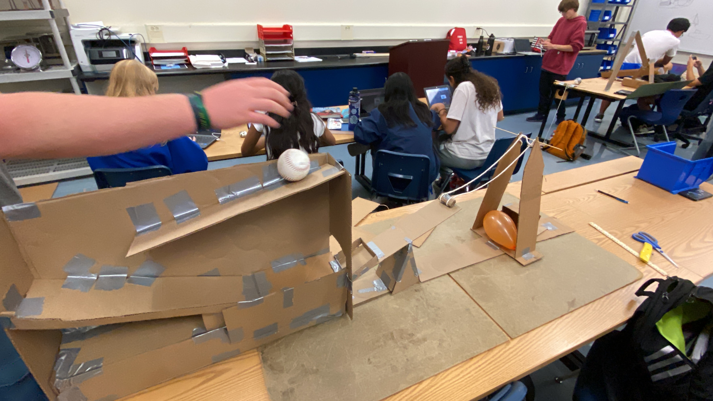
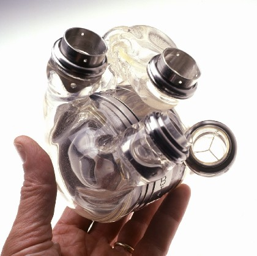
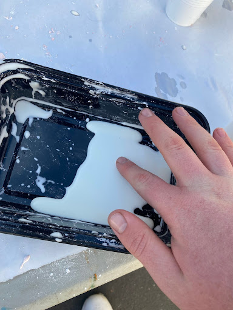
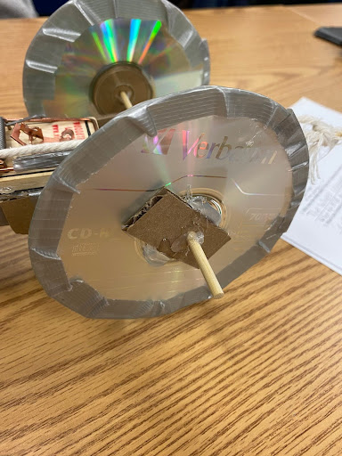
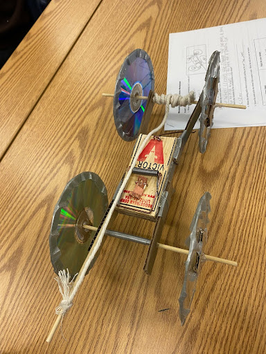

First we had to open up a website named tinkercad after we opened up the website one of our group members made a new project and selected the 3d design option. After he did that he emailed all of the group the link to the cad,after that we were all able to work on the project together. The cad consisted of a baseball traveling down two slopes then rolling on to a seesaw. The seesaw would hit a peice of cardboard that had a needle attached to it, the catdboard was tie to a string and the string and cardboard would hit the baloon and pop. We worked on the cad for about one day and on the second day we were almost finished and were putting on some finishing touches.
Once we were finished with the cad it was finally time to start building. Each group had a ruler a box cutter and two siccors in our group box. Each group was able to use a cutting board to protect the table, cardboard and some duct tape. All periods were able to use baseballs, they could also bring their own to use how ever they wanted. Groups were able to bring other things from home but were limited to it.
On the first day we started with the base and the slope. while we started this we ran into our first problem, the cads measurements were way to big to be made in the time we had. to solve this problem we cut each measurment on the cad in half and used those instead. We were making the base and the slope and we were almost done, while the rest of the group were finishing the slope and base I started making the seesaw to make the seesaw I needed to make a triangle the same width as the base so it would line up correctly. After I made the triangle I traced another and made a rectagle that matched up with the stiangles. after that I made a rectagle that would sit ontop of the triangles and be the actual seesaw. during this procces we ran into another problem. the rectangle on top of the triangles would not balance, so we had to find a solution. a solution we came up with was to take a peice of cardboard and make a fold into it we would then tape the cardboard to the side of the seesaw that would be bending and the cardboard propt the rectagle up and stil allowed it to slope down when the basbeall rolled onto it. After that we were faced with another problem with the seesaw, the seesaw was weighed down by the baseball and was starting to shape down and stay down. Our group put a big peice of ductape on the rectangle and folded it onto eachother so the rectangle would stay aligned where the baseball would drop off.
we were done with half of the machine and we had now make the pedistole that the needle would sit on before it was hit by the seesaw. the measurements were very big so we also had to cut them in half wich solved that issue. then we had to make the collom that would have the string and needle connected to it. we decided on making two triangles and having where the points connect be where the string was attached. during this procces we ran into an issue the triangles were too short and if they were tall enough there would be no space for the baloon to stay at to be popped. instead of the triangles we made a long rectangle witha point at the end. with this shape there will be space for the string to be attached and for the balloon to sit. after fixing that we ran into the biggest issue of the project. the cardboard and string that was attache dto the pedestol would not stay strait and woudl swing around in the air and could not pop the baloon. Our first solution was to attach another string to the pin. The pin still had the same problem we relised that the pin even though it was light it was affecting the way the cardboard moved. We poked the pin through the cardboard and had the pin stick to the other side.
Now that we had that problem fixed we tested it. The ball rolled down the slope and onto the seesaw, the seesaw hit the cardboard and the pin swung... The pin HITthe baloon, and did not pop. we found out that at the end of the slope there is a peice of cardboard that is slowing teh ball down and making the seesaw lift with less power. We fixed that and tested the machine, everything worked perfect but we didn't want anything to go wrong se for extra speed we put a peice of tape at the ledge were the pin and cardboard sat. This peice of tape created friction so the pin would swing faster.

Now that the machine was complete it was time to test the machine.
9/22-9/27
9/22
On friday there was no wifi in our classroom so we had to go to Mr.Kim's math classroom wich had wifi,we watched his slides and filled in the blanks onthe worksheet he handed out. The worksheet was on computer engineering, the new subject we will be learning. Computer engineering is the merge of computer science and electronic engineering. Computer engineering consists of embedded systems, computer visions,integrated circuits, firmware developing, computer architecture, and quantum computing. Another thing we learned was Moore's Law, Moores law is the law that every 2 years the number of transistors must double. A transistor is a miniature semi conducter that regulates voltage flow in a computer. We also learned about the components of a computer, a computer has a motherboard, central processing unit (CPU), random accese memory (RAM), storage (HDD,FLASH,ETC), and graphic card (GPU).
9/25
On moday we put in journal entrys to our websites, for our rube goldburg machines. Some people needed more time so we used this day to do enrys.
9/27
On wednesday we disected a computer. There was a slide show that we had to follow. We were given a screwdriver, container and extchangerble bits. We had to take out the Motherboard, Cpu,Gpu,Ram stick, fan cover,and disk drive. We had to start by taking off the cover then the side panel that covered the disk drive. then we had to lift the box up from its case. We had to unplug all the cords that we had to unplug, we had to then take out the disk drive.After that was out we had to take out the RAM stick from its case. then we had to remove the fan cover, under the cover was the fan and metal beast. We had to unscrew some screws from the bottom and remove the beast. under the beast was a cpu we had to take out the cpu and then we had to unscrew the screws from the Motherboard. We were able to take off the Mother board and we were done. After disecting the computer we had to put it all back and then we were offically done.
Bioengineering
Our next unit was bioengineering, bioengineering is the application of biology and the tools used in engineering. Bioengineering is a combonation of many different engineering pathways. A couple pathways used are Chemical engineering, physics, mathmatics and statistics. There are 5 main career options that come just from bioengineering, bioformatics, biomechanics, biomaterial, tissue/genetic engineering, and medical divices. There are many uses for bioengineering, two uses are prosthetics, and tissue engineering. An example of a prosthetic is a heart.

Biomimicry
another branch of bioengineering is biomimicry. Biomimicry is the study of mimicking biology living organismsto benifit our devices (spiderman). A way humans can use biomimicry is spiders webs. A problem in the world right now is clothes being wasted, and a shortage in silk. A way we could solve this problem is using a substance as strong and common as spider webs.
The Project
Our project for this unit was to make a prosthetic hand with cardboard, rubber bands, and tape. The task was to mathe a hand that works well enough to pick up an empty water bottle (its harder than you think). My first idea was to make a hand shape out of cardboard, wrap a rubberband around each finger and tape them to a ruler and be able to pull the ruler to close the fingers. I was able to make the hand with this idea but the rubber bands would stretch and prevent the fingers from closing fully, to fix this a put a peice of tape on the palm where each ruberband would touch adn made a small hole for the rubberband to go through. This solved the problem about half way, the rubberbands were letting the fingers bend more but were still held back by the rubber band slighlty. I asked my teacher how to fix this, and he suggested to put the rubber bands onth eback of the hand. I tried this by cutting a hole in the middle of the palm and pushed the rubberbands through. we only had one class to do this so by the time I did this the class was almost over so I couldent make any adjustments.
Aerospace Engineering
After we did our Bioengineering unit we started a new unit Aerospace engineering. This branch of engineering invollves the design, manufaturing, and science of aircraft and spacecraft. Aerospace engineering has to branches aeronautical, and astronautical. Aeronautical focuses on aircrafts missles and some rockets that stay in the earths orbit. Astronautical focuses on spacecraft, satellites and some rockets that leave the Earthe's orbit. Aerospace engineering focuses on 4 things, Structural design, navigation and control, guidence, and instrumentation. Some of the design diciplines that that come with aerospace engineering are thermodynamics, aerodynamics, propulsion, guidence and control systems, acoustics, and celestial mechanics. did you know that in 1903 the Wright brothers performed the first sustained controlled flight of a powered heavier than air aircraft! The performance lasted 12 seconds.
There are four main fources on aircrafts, drag, weight, lift, and thrust. Drag goes in the opposite direction of motion wich slows the aircraft down. The thrust moves in the direction of motion, wich is the way the aircraft is going. Weight is the force of gravity that points in the diection of earths center. Liftis the force that is at a right angle of the direction of motion.
Drag is the friction of the aircraft in the air. Lift is the differece of pressure below and above the aircraftwhile moving in a direction.
The Project
The project we were assigned was to make a bottle rocket out of a two liter bottle. The materials we were given for this project were cardboard, tape, string(for a parachute) and a pencil(for the launch rail) and hot glue. There were not enough bottles for everyone so there were a couple groups of 4 that shared one bottle. the first thing we had to do was to follow the measurements on our cad, we started off by making the wings of the rocket. We curved the wings to fit the bottle, then we made the cone. We tried to make the cone with cardboard but the cone was bumpy and didn't fit the bottle right. We had to think of a different way to make the cone, time was running out so we had to change the cone to be made with paper. This cone fit better and was flat. After we were finished with the cone and wings we glued the pencil to the bottle, the pencil was used to slide off the launch rail that would attach to the bottle. Mr.Kim suggested to use a certain pencil because it slide off the rail better and would have a better result. We attached a coke wrapper to the bottle as a joke of Coke sponsering the rocket. The next time we met it was time to launch the rocket, we went down to the middle field and the launcher was set up. The way the launch worked was that a machine would feed air into the rocket, then we would turn the machine off after it hit 70 psi. After that Mr.Kim would let go of the bottle, then the bottle would launch.
Environmental engineering
Enviromental engineering is the intigration of of engineering to improve air,water,and land for human life, and animal life.
Engineer Problems
problems that enviormental engineers face are air pollution, water poluttion, solid wastes, hazardous waste, radioactive waste, intergrated systems, pollution prevention, and other noises and light pollution.
Air Pollution
Most air pollution comes from energy use and production. Most air pollution are fossil fuel gasses, another air pollution is mathane gas, methane gas raises the earth's temparature.
Water Quality
A way to improve water quality is through water treatment. Water treatment is the proccese of turning dirty undrinkable water into clean usable water. When do people know what water is drinkable and what water needs to be treated?
Types Of Water
White water, white water is drinkabe/useable water. Grey water, grey water is less clean, slightly contaminated. Grey water can be consumed but can lead to sicknesses, grey water can be easily filtered to be safe for use. Black water, black water is heavily contaminated and can not be used or consumed by humans. Black water can be found toilets.
The Project
The project for this unit was to make a water filtration unit with common items.
Materials
The materials that were used for this project were a soda bottle, cotton balls, big rocks, pebbles, and sand.
The proces
We were seperated in groups of 2 first I started off by putting the cotton at the bottom of the bottle(the smaller the material the smaller dabris). I then put the san above the cotton then the pebbles, and then the big rocks. The water that we used was mixed with potting soil. my first bottle worked pretty well, but there was a problem. the cotton at teh bottom was getting dirty fast and was being pushed out of the bottle. My teacher suggestes putting more of each material in the bottle so I made a new bottle. In the new bottle there was double the materials in the filter. The secon bottle was better and made the water clearer
electrical engineering
Electrical engineering is the feild of engineering that is concerned with the study of designing, and use of of appliances and equipment wich use any form of elecricity.
Branches
Electrical Engineering
Computer Engineering
Power Engineering
Control Engineering
Telecommunications Engineering
Signal processing
Electrical Engineering is the design and development of electrical circuits and devices. Computer engineering is the design of computer software and hardware. Power engineering is the study of generation, transmisson, and distribution of electric power. Control engineering is the modeling of dynamic systemsand the design of controllers that cause these systems to behave in the desired manner. Telecommunications engineering is the design and devise systems of communication at a distance. Signal processing is the evaluation and analysis of signals.
The Four Main Units of Electricity
Voltage
current
Resistance
Power
TinkerKad
For our assignment we had to use TinkerKad and use a breadboard to turn on LED light. First thing you had to do was select a breadboard and a source of energy(a battery). You would then connect the positive side of the battery to the positive ground of the breadboard, then we would select a resistor. We would place the resistor on the breadboard, and do the same to an LED. Adter that we would take the wire connected from the negative ground and connect it to the negative side of the LED. We would then take the positive ground wire and connect it to the resistor. We would the connect to positive side of the LED to the resistor and then run the code.
Breadboarding
Bread boards are connected from metal tracks that connect under the plastic cover. Breadboards are used to connect multiple components at a time there are red (positive) and blue (negative) trails that run to the sideds of the board. The trails are connected in a collum and the middle parts are connected horozontally. All the holes on the board are used to have resistors, wires, LEDs and other electrical components.
Resistors
Resistors are used to control the amount of energy that goes to a component. The wires can connect from the ground(posotive and negative sides) and can connect to the middle holes, the middle holes can connect to the LEDs and any other components on the
LED
we used the breadboards again to make different sequences with the wires. We made a sequence to have one LED light up adn the two then three.
Buisness Engineering
Buisness Engineering is a hybrid between a buisness admin and a technology expert. Design thinking is the concept of designing a product to fit the needs of the people targeted to buy it. Customer obsessionis the concept of making changes to a product based on customer feedback.Some carrers that come from buisness engineering are project manager, Finance/Economics, marketing, and law and ethics.A responsibility for project managers are sprints, Sprints are the cycle used to design and release products. They start off with a plan, then the design, then develop, then test , then deploy, and then review. After the review they repeat this process multiple times until they cant update the product any more or a new one is made.
The Project
For this unit our project was to make our own buisness pitch. My group came up with the idea for making a ring that can track your fitness and keep track of your medication. The product was named "The Health Guard Ring"The ring was able to search for the cheapest price for your medication in your area. We gave it a tracker, waterproof , a case to charge cloud storage and a finger scanner to prevent theft. We made an app for the ring and made it multiple colours. We also made it available in multiple stores.
Chemical engineering
our new lesson is chemical engineering is a branch of engineering that focuses on chemical production and the manufacture of products throught chemical procceses. Chemical engineers ensure compliance in health, safety, and enviormental regulations. They also moniter, and optimize the performance of production processes. Feilds that can be obtained by chemical engineeres are Material science, metallurgy, microfluidics, mineral processing, molecular engineering, nanotechnology, natural enviorment,gas processing, nuclear reprocessing, and oil exploration. The average salary for a chemical engineer is $116,560.
The Project
The project we were assigned to do was to make oobleck, Oobleck is a non-newtonian fluid wich means it is a solid and a liquid.To make oobleck you need a mixture of water and cornstarch. we were given 3/4 cup of cornstarch and a cup of water. A restraint that was given to us was that we were not given the ratio of water to cornstarch. The challenge was to findout the ratio ourselves. We started off by adding a litte of both ingrediants at a time just to be safe. By the end of the period we added all of the cornstarch and water.

The Big Project
This Project is different from the other ones, for this project we were able to pick what we wanted to do... Sort of. For this project Mr.Kim gave us two options a mousetrap car, or an arduino car. My group choose to make a mousetrap car.
How It Works
this is how the car works. You take a mousetrap and make a base for it using cardboard, after that you take a couple wooden skewers and attach them to cds or any other circular object. You take another skewer and attach it to the mousetrap, you take a string and tie it to the skewer and the axle of the car. When you wind up the axle you bring back the mousetrap and when you let go it should roll.
Project Proposal
The project proposal is a document that discribes the project. In the proposal it explains the research, the materials, constraints, schedule, and the team members. In the introduction we explained how this project uses what we have learned over the year in one project, in the description we described how the car worked. For Reasearch we looked up different photos and videos of mousetrap cars to get an idea of what we will do. There werent many constraints to the project other than limited materials. The schedual we just listed how we visioned the procces we would use. For the member description we just listed some facts about us. This is the link to our Mouse Trap Project Proposal: Mouse Trap Project Proposal
The Cad
Our cad was a bit different than the videos that we had in the project proposal but it had the same materials, and the same concept. It took us about a class to make the cad for the car. Mousetrap Tinker cad
Making of the car
To make the car we started by making the base, we layered a couple rectangles of cardboard and taped them together, then we made the peices that would be connected to the axels. We made the wheels and axels by using the skewers, we first used two pointed ends of the skewers and taped them together. After rolling the car for the first time we faced our first problem, the tape on the axels were making the axels sink in and made the wheels at an angle. This was shortening the distance the car travels. to solve this we just used segments of the skewers. Another problem accured, the wheels were wobling when they were rolling. To fix this problem we glued the wheels to the axels. Then We had another problem, when letting go of the mousetrap the wheels would stay in one place and then roll. To fix this we put duct tape to the wheels so they had better grip on the ground or table. Then we tested the car, on our first test the car went 13 feet then the car went 15 feet and then 13 again. This was our first attempt so we will make another one and learn from this car.
 
Second car cad
The next week we started to work on our second idiration. I started the cad while Aziz started to build the car I got good progress on the first day but it wasnt finished yet. Our plan for the second car was to make a bigger base and to make the wind up not to go past the back wheels. I made the cad the exact measurements and finished it the second day of making the new car. second car cad
building the car
To make the new car we made the base bigger and with only one extending axel. To do this we did the samething as the first car by glueing and taping pieces of cardboard to the base. For the other axle we pushed the skewer throught the holes in the cardboard. We kept the same wheels as the first car with duct tape on them for traction. We glued the trap to the car and taped the skewer and string to the trap and axle. We then tried the car out for the fist time and we ran into our first problem. When we released the skewer the base bent because of the pressure that the trap made. To fix this we tried to add another piece of cardboard. This solution made the base a little stronger but the extending axles were still bending. We tried to add more cardboard to them but the damage made would need us to restart to fix it. We diddnt have enough time to restart so we just had to risk them bending.
testing the Car
We came in th enext day wich was the test day. I got the car from the back table and tested it on the table. It worked fine. The class started and Aziz and me tried testing it. The base was bending again and the car wasnt going anywhere. We tried moving the rope and other solutions. None of them were helping fix the problem. It was coming close to the time to test and we were out of ideas.So we just headed to the cafe and tested the cars